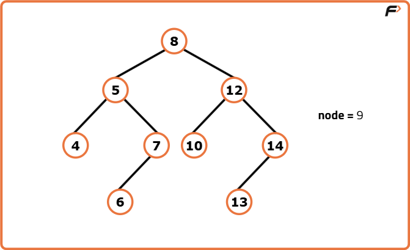
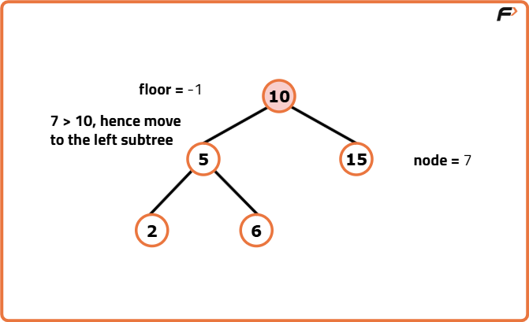
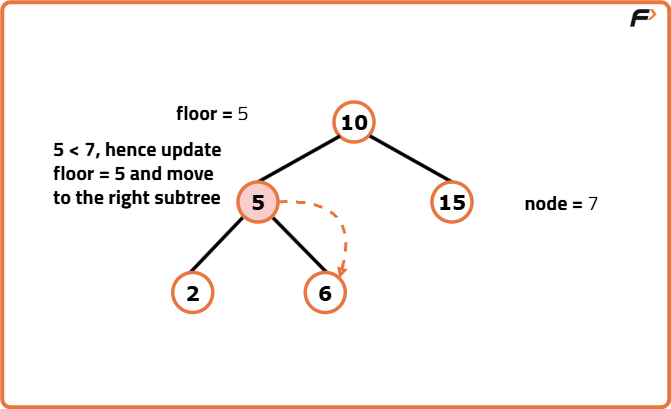
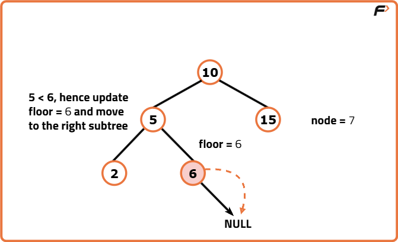

Archived from https://takeuforward.org/binary-search-tree/floor-in-a-binary-search-tree/
Problem Statement: Given a Binary Search Tree and a key, return the floor of the given key in the Binary Search Tree.
Floor of a value refers to the value of the largest node in the Binary Search Tree that is smaller than or equal to the given key.
If the floor node does not exist, return nullptr.
Output : 6Explanation : In the given BST, the largest value smaller or equal to 7 is 6. Input : Binary Search Tree: 8 5 12 4 7 10 14 -1 -1 6 -1 -1 -1 13, Key = 9

Output : 8Explanation : In the given BST, the largest value smaller or equal to 9 is 8.
Disclaimer:
Here is the practice link to help you assess your knowledge better.
It's highly recommend trying to
solve it before looking at the solution.
Approach
Algorithm
To find the floor value, the approach involves tracking the largest node value encountered that is smaller than or equal to the key. It traverses the tree, either finding the exact key or reaching the nodes that approach the given key’s value. During the traversal, at every node, if the key matches the node’s values, it directly assigns the node’s value as the floor and concludes the search.
If the key is smaller than the current node’s value, the algorithm navigates to the left subtree to potentially find a smaller value and if the key is larger the algorithm updates the floor value with the current node’s values and explores the right subtree for potentially larger values.
Initialise a variable floor to -1 to store the result initially.
Traverse the Binary Search Tree starting from the root.
If the key is equal to the current node’s value, assign it to floor and return.
If the key is greater than the current node’s value, update floor with the current node’s value and move to the right subtree.
If the key is smaller than the current node’s value, move to the left subtree.
After traversal, return floor, which represents the largest value smaller than or equal to the key, or -1 if no such value exists.



Code
#include <bits/stdc++.h>
using namespace std;
// Definition of TreeNode structure
// for a binary tree node
struct TreeNode {
// Value of the node
int val;
// Pointer to the left child node
TreeNode* left;
// Pointer to the right child node
TreeNode* right;
// Constructor to initialize the node with a
// value and set left and right pointers to null
TreeNode(int x) : val(x), left(nullptr), right(nullptr) {}
};
class Solution {
public:
// Function to find the floor of a key
// in a Binary Search Tree (BST)
int floorInBST(TreeNode* root, int key){
// Initialize the floor variable
int floor = -1;
// Traverse the BST until root becomes null
while(root){
// If key is equal to current node value
// then it is the floor
if(root->val == key){
floor = root->val;
return floor;
}
// If key is greater than current node value
// move right and update floor
if(key > root->val){
floor = root->val;
root = root->right;
}
else{
// If key is smaller, move left
root = root->left;
}
}
// Return the computed floor value
return floor;
}
};
// Function to perform an in-order traversal
// of a binary tree and print its nodes
void printInOrder(TreeNode* root) {
// Base case: if node is null
if (root == nullptr) return;
// Left subtree
printInOrder(root->left);
// Print current node
cout << root->val << " ";
// Right subtree
printInOrder(root->right);
}
int main() {
// Creating a BST
TreeNode* root = new TreeNode(10);
root->left = new TreeNode(5);
root->right = new TreeNode(13);
root->left->left = new TreeNode(3);
root->left->left->left = new TreeNode(2);
root->left->left->right = new TreeNode(4);
root->left->right = new TreeNode(6);
root->left->right->right = new TreeNode(9);
root->right->left = new TreeNode(11);
root->right->right = new TreeNode(14);
cout << "Binary Search Tree (Inorder): "<< endl;
printInOrder(root);
cout << endl;
Solution solution;
// Key to find floor
int target = 8;
int floorVal = solution.floorInBST(root, target);
if(floorVal != -1){
cout << "Floor of " << target << " is: " << floorVal << endl;
}
else{
cout << "No floor found!" << endl;
}
return 0;
}
import java.util.*;
// Definition of TreeNode class for a binary tree node
class TreeNode {
// Value of the node
int val;
// Pointer to the left child node
TreeNode left;
// Pointer to the right child node
TreeNode right;
// Constructor to initialize the node with a value
// and set left and right pointers to null
TreeNode(int x) {
val = x;
left = null;
right = null;
}
}
class Solution {
// Function to find the floor of a key
// in a Binary Search Tree (BST)
public int floorInBST(TreeNode root, int key) {
// Initialize the floor variable
// to store the floor value
int floor = -1;
// Traverse the BST until reaching
// the end or finding the key
while (root != null) {
// If the key is found, assign it
// as the floor value and return
if (root.val == key) {
floor = root.val;
return floor;
}
// If the key is greater than the current
// node's value, move to the right subtree
if (key > root.val) {
// Update the floor with the current node's
// value and move to the right subtree
floor = root.val;
root = root.right;
} else {
// If the key is smaller than the current
// node's value, move to the left subtree
root = root.left;
}
}
// Return the computed floor value
return floor;
}
}
// Main class
public class Main {
// Function to perform an in-order traversal
// of a binary tree and print its nodes
public static void printInOrder(TreeNode root) {
// Check if the current node
// is null (base case for recursion)
if (root == null) {
// If null, return and
// terminate the function
return;
}
// Recursively call printInOrder
// for the left subtree
printInOrder(root.left);
// Print the value of the current node
System.out.print(root.val + " ");
// Recursively call printInOrder
// for the right subtree
printInOrder(root.right);
}
// Main method
public static void main(String[] args) {
// Creating a BST
TreeNode root = new TreeNode(10);
root.left = new TreeNode(5);
root.right = new TreeNode(13);
root.left.left = new TreeNode(3);
root.left.left.left = new TreeNode(2);
root.left.left.right = new TreeNode(4);
root.left.right = new TreeNode(6);
root.left.right.right = new TreeNode(9);
root.right.left = new TreeNode(11);
root.right.right = new TreeNode(14);
System.out.println("Binary Search Tree:");
printInOrder(root);
System.out.println();
Solution solution = new Solution();
// Searching for a value in the BST
int target = 8;
int floorVal = solution.floorInBST(root, target);
if (floorVal != -1) {
System.out.println("Floor of " + target + " is: " + floorVal);
} else {
System.out.println("No floor found!");
}
}
}
# Definition of TreeNode structure
# for a binary tree node
class TreeNode:
# Constructor to initialize the node with a
# value and set left and right pointers to null
def __init__(self, x):
self.val = x
self.left = None
self.right = None
class Solution:
# Function to find the floor of a key
# in a Binary Search Tree (BST)
def floorInBST(self, root, key):
# Initialize the floor variable
# to store the floor value
floor = -1
# Traverse the BST until reaching
# the end or finding the key
while root:
# If the key is found, assign it
# as the floor value and return
if root.val == key:
floor = root.val
return floor
# If the key is greater than the current
# node's value, move to the right subtree
if key > root.val:
# Update the floor with the current node's
# value and move to the right subtree
floor = root.val
root = root.right
else:
# If the key is smaller than the current
# node's value, move to the left subtree
root = root.left
# Return the computed floor value
return floor
# Function to perform an in-order traversal
# of a binary tree and print its nodes
def printInOrder(root):
# Check if the current node
# is null (base case for recursion)
if root is None:
# If null, return and
# terminate the function
return
# Recursively call printInOrder
# for the left subtree
printInOrder(root.left)
# Print the value of the current node
print(root.val, end=" ")
# Recursively call printInOrder
# for the right subtree
printInOrder(root.right)
# Creating a BST
root = TreeNode(10)
root.left = TreeNode(5)
root.right = TreeNode(13)
root.left.left = TreeNode(3)
root.left.left.left = TreeNode(2)
root.left.left.right = TreeNode(4)
root.left.right = TreeNode(6)
root.left.right.right = TreeNode(9)
root.right.left = TreeNode(11)
root.right.right = TreeNode(14)
print("Binary Search Tree:")
printInOrder(root)
print()
solution = Solution()
# Searching for a value in the BST
target = 8
floorVal = solution.floorInBST(root, target)
if floorVal != -1:
print(f"Floor of {target} is: {floorVal}")
else:
print("No floor found!")
// Definition of TreeNode structure
// for a binary tree node
class TreeNode {
// Constructor to initialize the node with a
// value and set left and right pointers to null
constructor(x) {
this.val = x;
this.left = null;
this.right = null;
}
}
class Solution {
// Function to find the floor of a key
// in a Binary Search Tree (BST)
floorInBST(root, key) {
// Initialize the floor variable
// to store the floor value
let floor = -1;
// Traverse the BST until reaching
// the end or finding the key
while (root) {
// If the key is found, assign it
// as the floor value and return
if (root.val === key) {
floor = root.val;
return floor;
}
// If the key is greater than the current
// node's value, move to the right subtree
if (key > root.val) {
// Update the floor with the current node's
// value and move to the right subtree
floor = root.val;
root = root.right;
} else {
// If the key is smaller than the current
// node's value, move to the left subtree
root = root.left;
}
}
// Return the computed floor value
return floor;
}
}
// Function to perform an in-order traversal
// of a binary tree and print its nodes
function printInOrder(root) {
// Check if the current node
// is null (base case for recursion)
if (!root) {
// If null, return and
// terminate the function
return;
}
// Recursively call printInOrder
// for the left subtree
printInOrder(root.left);
// Print the value of the current node
console.log(root.val + " ");
// Recursively call printInOrder
// for the right subtree
printInOrder(root.right);
}
// Creating a BST
let root = new TreeNode(10);
root.left = new TreeNode(5);
root.right = new TreeNode(13);
root.left.left = new TreeNode(3);
root.left.left.left = new TreeNode(2);
root.left.left.right = new TreeNode(4);
root.left.right = new TreeNode(6);
root.left.right.right = new TreeNode(9);
root.right.left = new TreeNode(11);
root.right.right = new TreeNode(14);
console.log("Binary Search Tree:");
printInOrder(root);
console.log();
let solution = new Solution();
// Searching for a value in the BST
let target = 8;
let floorVal = solution.floorInBST(root, target);
if (floorVal !== -1) {
console.log("Floor of " + target + " is: " + floorVal);
} else {
console.log("No floor found!");
}
Complexity Analysis
Time Complexity: O(log2N), where N is the number of nodes in the Binary Search Tree. The complexity is equivalent to the height of the tree. Space Complexity: O(1), since the algorithm does not use any additional space or data structures.